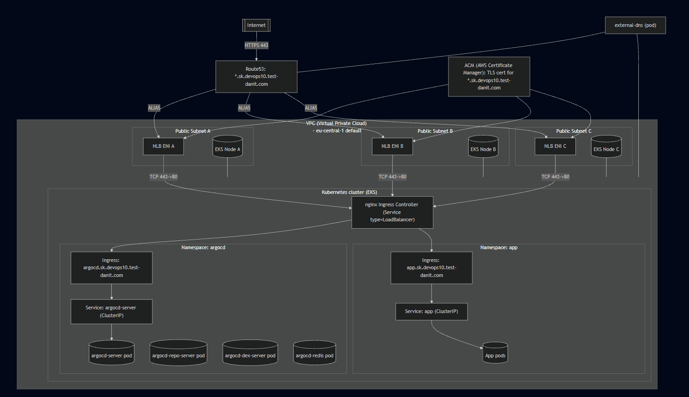
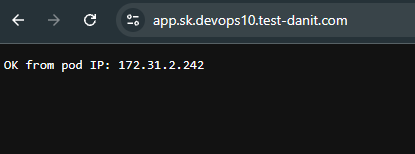
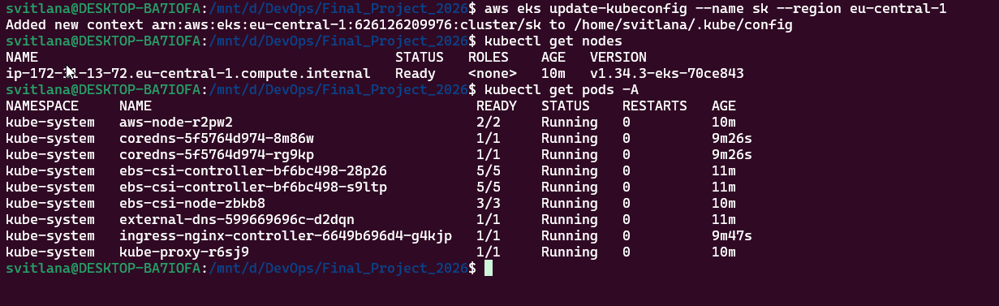
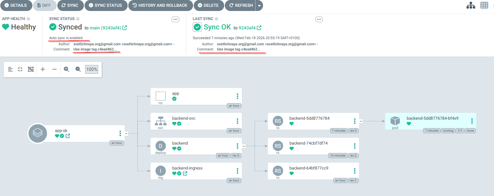

DevOps Final Project 2026
Автоматизований шлях: код Python backend → Docker Hub image → EKS deployment → ArgoCD GitOps auto-sync.
Ціль
- Підняти EKS через Terraform.
- Доставляти app через Kubernetes маніфести.
- Керувати деплоєм через ArgoCD.
- Автооновлення при нових комітах.
Що вже працює
- ArgoCD status: Healthy + Synced.
- App домен працює через Ingress/NLB.
- Image tag змінюється на SHA коміту.
- Підтверджено rollout нового pod.
Архітектура рішення

Компоненти
ACM
AWS Certificate Manager: видає/зберігає TLS-сертифікат для HTTPS доменів (app.sk..., argocd.sk...).
external-dns
Kubernetes-контролер, який читає Ingress/Service і автоматично створює DNS-записи в Route53.
Route53
DNS-сервіс AWS: перетворює домен app.sk... у адресу AWS NLB.
NLB
AWS Network Load Balancer, який приймає зовнішній трафік і передає його до ingress-controller.
EKS
Керований Kubernetes від AWS: контрольна площина (control plane) від AWS, а worker-ноди — в моєму node group.
Ingress (nginx)
Точка входу HTTP/HTTPS у кластер: приймає запит і маршрутизує його до Kubernetes Service.
ArgoCD
GitOps-інструмент: порівнює стан у Git з кластером і синхронізує зміни (AUTO-SYNC).
Що показано на схемі
Namespace: argocd (керування GitOps)
- Ingress: argocd.sk... (вхідна точка).
- Service: argocd-server (ClusterIP).
- Pods (коротко):
- argocd-server — UI + API ArgoCD (керування застосунками, sync, статус).
- argocd-repo-server — бере Git-репо і рендерить маніфести (Helm/Kustomize), віддає їх ArgoCD.
- argocd-dex-server — аутентифікація/SSO (OIDC), інтеграція з Identity Provider.
- argocd-redis — Redis для кешу/швидкої роботи (тимчасові дані, щоб UI/операції були швидші).
- Показати скрін з pod-ами
Namespace: app (мій backend)
- Ingress: app.sk... (домен додатку).
- Service: app (ClusterIP).
- Pods: застосунок (Deployment → ReplicaSet → Pods).
- Показати скрін з pod-ами
Потік запиту (app.sk...)
- Браузер → Route53 (DNS-resolve).
- Route53 → NLB (публічна точка входу).
- NLB → nginx Ingress (маршрутизація по host/path).
- Ingress → Service → Pod (backend).
- Pod → відповідь OK from pod IP.
Python Backend App
Логіка сервера
- Слухає порт 8000.
- На / повертає HTTP 200.
- Віддає текст OK from pod IP.
- Дозволяє бачити, що трафік іде в pod.
Результат в браузері

Dockerfile: як будується образ
- Базовий образ: python:3.12-slim.
- Копіюється server.py.
- ENV PORT=8000 + EXPOSE 8000.
- Запуск: python server.py.
Пояснення ENV / EXPOSE
- ENV PORT=8000 задає змінну середовища PORT, яку читає server.py (якщо змінна не задана — використовується 8000 за замовчуванням).
- EXPOSE 8000 документує, що контейнер слухає порт 8000. Це не відкриває порт назовні, але використовується інструментами (Docker run/compose, Kubernetes).
- Підсумок: ENV потрібен додатку (щоб знати порт), EXPOSE — підказка/документація, а реальний “вихід назовні” робиться через
-pу Docker або через Kubernetes Service/Ingress.
Навіщо це
Dockerfile описує лише рецепт збірки. Назва image і push у Docker Hub задаються вже у GitHub Actions workflow.
GitHub Actions: Build and Push
- Trigger: push у гілку main.
- Логін у Docker Hub через GitHub Secrets.
- Build context: корінь репозиторію.
- Push тегів: latest та github.sha.
Що таке uses: і чому різні @v3/@v4/@v5
- uses: означає “використай готовий GitHub Action” (чужий або свій) замість того, щоб писати shell-команди вручну.
- Формат:
owner/repo@ref, наприкладactions/checkout@v4абоdocker/build-push-action@v5. - @v4/@v5 — це ref (версія), зазвичай major-версія конкретного action. У різних action різні актуальні major-версії, тому й бачиш різні числа.
- Для максимальної безпеки інколи pinять на конкретний SHA коміту, але для навчального проєкту major-теги ок.

Terraform: EKS та інфраструктура
- EKS cluster + 1 node group.
- nginx ingress controller.
- external-dns для Route53 записів.
- ACM (AWS Certificate Manager) TLS сертифікат.
- ArgoCD інсталяція в кластер (наступний слайд).
WSL: 1 node group / 1 node
вивід має містити 1 рядок / 1 назву:
kubectl get nodes -o wide
kubectl get nodes -L topology.kubernetes.io/zone,eks.amazonaws.com/nodegroupЩоб зрозуміти, в якій зоні зараз працює app pod: треба співставити NODE з kubectl get pods -n app -o wide і колонку ZONE з команди вище.
aws eks list-nodegroups --cluster-name <cluster_name>
Terraform файли (EKS):
provider.tf — провайдери та доступ до API
Цей файл пояснює Terraform, куди підключатися і чим керувати. Простими словами: він налаштовує доступ до AWS і до Kubernetes-кластера.
- provider aws — створює AWS ресурси (EKS, IAM, SG, Route53 тощо) у потрібному регіоні та профілі.
- provider kubernetes — працює вже всередині EKS (namespace, service account, інші K8s об’єкти через Kubernetes API).
- provider helm — встановлює Helm чарти в кластер (наприклад ingress-nginx, ArgoCD).
- Доступ до EKS API береться з трьох речей: endpoint (адреса кластера), CA certificate (довіра до кластера) і token (авторизація).
- Без правильного provider.tf Terraform може створити AWS ресурси, але не зможе керувати Kubernetes/Helm всередині кластера.
variables.tf — змінні проєкту
Описує вхідні параметри: name (кластер/ресурси), vpc_id, subnets_ids, tags, region, iam_profile, zone_name.
terraform.tfvars — значення змінних
Конкретні значення для цього середовища: name = sk, VPC/subnets, теги, zone_name = devops10.test-danit.com, region.
backend.tf — де зберігається state
Цей файл налаштовує, де Terraform зберігає state (тобто "пам’ять" про вже створені ресурси). У нас state зберігається не локально, а в AWS.
- S3 — місце, де лежить файл state; завдяки цьому команда працює з одним спільним джерелом правди.
- DynamoDB lock — блокування на час plan/apply, щоб двоє людей одночасно не змінювали один і той самий state.
- Перевага: менше конфліктів, безпечніші деплої і легше відновитися, якщо хтось запускає Terraform з іншого комп’ютера.
sg.tf — мережевий доступ (Security Groups)
Цей файл задає мережеві правила доступу до EKS. Простими словами: хто може "достукатися" до кластера, а хто ні.
- Створюється Security Group для кластера і правила вхідного/вихідного трафіку.
- Доступ до EKS API (порт 443) дозволений тільки з нашого поточного зовнішнього IP (визначається через
icanhazip). - Це значно безпечніше, ніж відкривати API для всього інтернету (
0.0.0.0/0). - Якщо IP зміниться (інший Wi-Fi/VPN), правило треба оновити, інакше kubectl/terraform не підключаться до API.
iam.tf — IAM ролі + OIDC для IRSA
Цей файл налаштовує, хто і з якими правами працює в EKS. Простими словами: без нього кластер або pod-и не матимуть потрібного доступу до AWS сервісів.
- Створюється IAM роль для EKS cluster (права для керуючої частини) і окрема IAM роль для node group (права для worker-нод).
- Підключається OIDC (OpenID Connect) provider — це довіра між EKS і AWS IAM, щоб AWS міг перевіряти "хто саме" запитує доступ.
- На базі цього працює IRSA (IAM Roles for Service Accounts): конкретний Kubernetes service account отримує свою IAM роль, тому pod має тільки потрібні права (наприклад, для Route53 в external-dns).
- Важливо: так безпечніше, ніж зберігати AWS access keys у контейнері; плюс легше дотримуватися принципу мінімальних прав.
eks-cluster.tf — створення EKS cluster
Це файл, який створює сам EKS-кластер (керуючу частину Kubernetes в AWS). Простими словами: тут ми "вмикаємо" Kubernetes у нашій VPC і задаємо базові правила його роботи.
- Створюється aws_eks_cluster з іменем кластера, IAM-роллю та мережевими параметрами (subnets + security group).
- Через aws_eks_cluster_auth отримується токен/доступ, щоб Terraform, Helm і kubectl могли підключатися до кластера.
- Додається managed add-on coredns (зафіксована версія) — це внутрішній DNS Kubernetes, щоб сервіси в кластері знаходили один одного по імені.
- Важливо: цей файл створює "мозок" кластера (control plane), а робочі ноди для pod-ів додаються окремо в eks-worker-nodes.tf.
eks-worker-nodes.tf — node group (worker nodes)
Цей файл створює worker nodes — тобто сервери, на яких реально запускаються Pod-и (додаток, ingress, системні компоненти). Робиться це через ресурс aws_eks_node_group, тому AWS сам керує життєвим циклом цих нод.
- scaling 1/1/1 означає: мінімум 1, бажано 1, максимум 1 нода — простий і стабільний формат для навчального/демо середовища.
- instance type t3.medium — базовий збалансований EC2 тип (CPU/RAM), якого достатньо для невеликого кластера та демо-навантаження.
- Простими словами: без цього файлу EKS control plane існував би, але запускати Pod-и було б ніде.
acm.tf — TLS сертифікат (ACM)
Використовується готовий Terraform-модуль terraform-aws-modules/acm/aws (v3): він автоматизує випуск ACM-сертифіката для sk.devops10.test-danit.com + wildcard *.sk..., створює/керує DNS validation записами в Route53 (через zone_id), чекає підтвердження (wait_for_validation = true) і віддає ARN сертифіката для підключення TLS на Ingress/NLB.
ingress_controller.tf — nginx Ingress Controller
Встановлює ingress-nginx через helm_release (chart ingress-nginx) і налаштовує Service annotations для AWS NLB: тип nlb, схема internet-facing, TLS-порт https, backend protocol http. У сертифікатну анотацію service.beta.kubernetes.io/aws-load-balancer-ssl-cert підставляємо module.acm.acm_certificate_arn — це ARN ACM-сертифіката з acm.tf, який NLB використовує для TLS termination.
eks-external-dns.tf — external-dns (Route53)
Цей файл ставить у кластер сервіс external-dns. Простими словами: він дивиться на наші Ingress/hostname у Kubernetes і автоматично робить такі самі DNS-записи в Route53.
- Використовується готовий модуль lablabs/eks-external-dns/aws, щоб не налаштовувати все вручну.
- Доступ до Route53 видається без AWS ключів у pod-ах: через OIDC (OpenID Connect) + IRSA (IAM Roles for Service Accounts).
- OIDC підтверджує, що це саме pod з нашого EKS, а IRSA "прикріплює" до цього pod-а потрібну IAM роль (тільки з потрібними правами).
- Коли з’являється або змінюється Ingress (наприклад, app.sk... чи argocd.sk...), external-dns сам оновлює DNS запис у Route53.
- Перевага: менше ручної роботи і менше помилок — DNS завжди синхронний зі станом кластера.
ebs-csi.tf — storage driver (EBS CSI)
Це драйвер, який з’єднує Kubernetes з дисками AWS EBS (Elastic Block Store). Простими словами: коли pod просить постійне сховище, саме цей компонент створює EBS-диск і підключає його до ноди.
- Потрібен для PersistentVolume / PersistentVolumeClaim, тобто коли дані мають зберігатися після перезапуску pod-а.
- У EKS найзручніше ставити його як офіційний EKS add-on — aws-ebs-csi-driver.
- Без EBS CSI динамічне створення EBS-томів не працюватиме, і stateful додатки (БД, черги тощо) не зможуть нормально зберігати дані.
argocd.tf — встановлення ArgoCD
Інсталяція ArgoCD через Helm (показано на наступному слайді).
.terraform.lock.hcl — lock версій провайдерів
Автоматично фіксує версії провайдерів, щоб plan/apply були повторюваними.
.terraform/ — кеш провайдерів/модулів
Створюється після terraform init: тут лежать завантажені провайдери й модулі. У Git зазвичай не комітиться.
tfplan — збережений план
Файл, який створюється командою terraform plan -out=tfplan. Далі можна застосувати саме його: terraform apply tfplan.
Terraform: ArgoCD через Helm (argocd.tf)
У argocd.tf Terraform встановлює ArgoCD через Helm і далі керує ним автоматично (оновлення та стан зберігаються у Terraform).
Що таке resource "helm_release"
- helm_release — це спосіб через Terraform встановити ArgoCD у Kubernetes.
- Один terraform apply робить усе одразу: піднімає інфраструктуру і ставить ArgoCD з потрібними налаштуваннями.
- Усе зберігається в коді, тому це легко повторити в іншому середовищі.
Що саме відбувається в argocd.tf
- Формується адреса ArgoCD: argocd.<domain>.
- Ставиться чарт argo-cd у namespace argocd (якщо namespace ще нема — він створюється).
- Вмикається Ingress і вказується, що його обробляє nginx.
- Прописується hostname, щоб ArgoCD відкривався по потрібному домену.
- Параметр --insecure означає: в кластері трафік до ArgoCD без TLS, а HTTPS завершується на AWS балансувальнику з ACM сертифікатом.
- depends_on задає порядок: спочатку EKS і nginx ingress, потім ArgoCD.
Ключові налаштування (скорочено):
resource "helm_release" "argocd" {
repository = "https://argoproj.github.io/argo-helm"
chart = "argo-cd"
namespace = "argocd"
create_namespace = true
set { name = "server.ingress.enabled" value = "true" }
set { name = "server.ingress.ingressClassName" value = "nginx" }
set { name = "global.domain" value = "argocd.<domain>" }
set { name = "server.ingress.hostname" value = "argocd.<domain>" }
set { name = "server.extraArgs[0]" value = "--insecure" }
depends_on = [aws_eks_cluster..., aws_eks_node_group..., helm_release.nginx_ingress]
}Як перевірити, що ArgoCD працює
Важливо: перед kubectl командами онови kubeconfig
Щоб kubectl підключився до правильного EKS-кластера, спочатку оновлюємо конфіг доступу:
aws eks update-kubeconfig --name sk --region eu-central-1- Перевірити pod-и в namespace argocd.
- Відкрити URL https://argocd.<domain>.
- Отримати initial admin password (secret).
Команда для паролю (admin)
kubectl -n argocd get secret argocd-initial-admin-secret \
-o jsonpath="{.data.password}" | base64 -d; echoKubernetes Manifests (k8s/app)
- namespace.yaml: namespace app.
- deployment.yaml: backend image + rollout.
- service.yaml: ClusterIP service.
- ingress.yaml: app.sk... домен.
Типи Kubernetes Service (коротко)
- ClusterIP — доступний тільки всередині кластера (стандартний тип). Підходить, коли зовнішній доступ робить Ingress.
- NodePort — відкриває порт на кожній ноді:
<NodeIP>:<port>. Простий, але не дуже зручний для продакшену. - LoadBalancer — просить хмару створити зовнішній Load Balancer і видати public endpoint.
- ExternalName — не проксить трафік, а повертає DNS-аліас на зовнішній домен.
- Headless (
clusterIP: None) — без віртуального IP; DNS повертає IP pod-ів (часто для StatefulSet).
ArgoCD Application (GitOps)
- Application: app-sk.
- Source path: k8s/app.
- Destination namespace: app.
- Auto Sync: увімкнено.
- Зміна image tag → автосинхронізація.

Troubleshooting: DNS NXDOMAIN
Що сталося
- external-dns створив запис у Route53.
- Після UPSERT у Route53 частина DNS-резолверів оновлюється не одразу.
- 8.8.8.8 вже бачив A-record.
- Локальний DNS (10.255.255.254) тимчасово давав No answer / NXDOMAIN.
Як вирішили
- Підтвердили запис через публічні DNS: 8.8.8.8 і 1.1.1.1.
- Дочекались оновлення локального DNS-кешу після перезапису Route53.
- ipconfig /flushdns на Windows.
- Перезапуск браузера.
- Повторна перевірка nslookup і відкриття app.
Демо і висновок
Що показати в live demo (2–3 хв)
- ArgoCD: app-sk = Healthy/Synced.
- kubectl get pods -n app -o wide.
- kubectl describe deployment backend -n app | grep -i image.
- Відкрити app URL в браузері.
Ключовий результат
Реалізовано повний GitOps цикл: зміна в Git приводить до автоматичного оновлення застосунку в EKS із перевіряємим результатом.